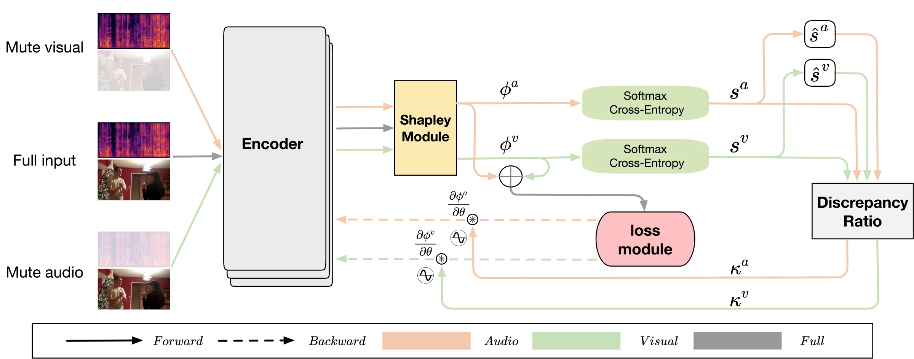
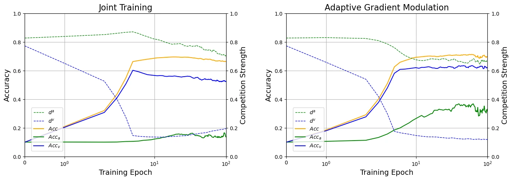

Boosting Multi-modal Model Performance with Adaptive Gradient Modulation
ICCV 2023 · * Equal contribution
Reweighting gradients by modality
Joint training can leave useful signals underused when modalities compete during optimization. Adaptive Gradient Modulation (AGM) estimates each modality's contribution to the fused prediction and adjusts how strongly that contribution updates the model.

Estimate modality contributions
Shapley-based attribution uses predictions with subsets of inputs masked to separate individual modality responses, including in models that combine inputs before classification.
Adjust the training update
Per-modality cross-entropy is compared with a running reference. That discrepancy determines how much each modality's gradient contributes to the update.
Accuracy and modality competition
Takeaway AGM raised early-fusion CREMA-D accuracy from 61.88% to 81.46%, a gain of 19.58 percentage points over joint training. The study also reports improvements with late fusion, FiLM, and specialized fusion networks.
| Dataset | Setup | Baseline | AGM |
|---|---|---|---|
| AV-MNIST | Late fusion | 69.77% | 72.14% |
| AV-MNIST | Early fusion | 71.15% | 72.26% |
| UR-Funny | Late fusion | 64.50% | 65.97% |
| UR-Funny | Early fusion | 65.15% | 66.07% |
| CREMA-D | Late fusion | 61.14% | 78.48% |
| CREMA-D | Early fusion | 61.88% | 81.46% |
| AVE | PSP | 76.02% | 77.11% |
| CMU-MOSEI | TBJE | 80.91% | 81.76% |
| Kinetics-Sound | Late fusion | 52.78% | 56.93% |
| Kinetics-Sound | FiLM | 51.17% | 55.73% |
What changes during training?
The competition metric measures how well a linear probe on the joint model's features can recover a separately trained single-modality predictor. In AV-MNIST, AGM reduced measured competition for both modalities and helped the model learn from audio earlier.
